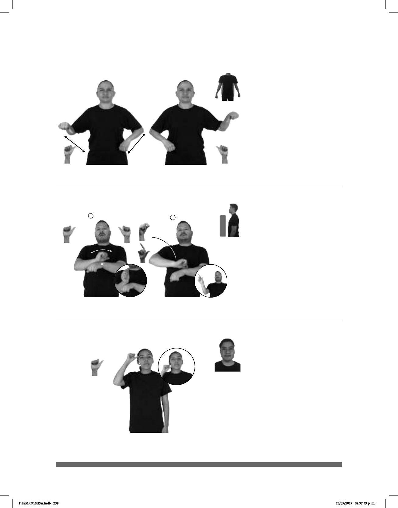

238
1
2
(A-16)
(A-17)
pro-NOSOTROS TENER MUCHA ACTIVIDAD DIFERENTE ESCUELA
allá
Nosotros tenemos muchas actividades en la escuela.
____muy
ACTOR dm-TOM CRUICE FAMOSO
Tom Cruice es un actor muy famoso.
(A-18)
BIBLIA
ahí
DENTRO ADÁN NOMBRE HABER
En la biblia está el nombre de Adán.
Seña: SB
MD y MB A.1
MD y MB palmas hacia
abajo.
MD y MB a la altura de la
cintura.
Las manos tocan la
cintura alternadamente.
sust. f. Conjunto de las
acciones y tareas a las que algo o
alguien se dedica.
Seña: I. SB y II. SB
I. MD A.1, MB S.1; II. MD
seña que pasa de P.1 a L.8, MB S.1
I. MD palma hacia afuera,
MB palma hacia abajo; II. MD palma hacia
afuera. MB palma hacia abajo.
I. A la altura del pecho MD sobre
MB; II. MD de MB a la altura de la cabeza
del centro al lado derecho. MB a la altura del
pecho.
I. La muñeca y el antebrazo
hacen girar la mano sin cambiar su orienta-
ción; II. MD se mueve formando un arco
mientras el dedo índice se desprende con
fuerza del pulgar.
sust. Persona que interpreta un
radiofónica o televisiva.
Seña: SM
A.1
Palma hacia afuera.
De la sien a la barbilla
del lado derecho.
La mano simula un
salto.
Primer hombre creado
por Dios sobre la Tierra.
La seña se usa en la
comunidad sorda católica, cristiana
y de los Testigos de Jehová.
DLSM COMISA.indb 238 25/09/2017 02:37:39 p. m.